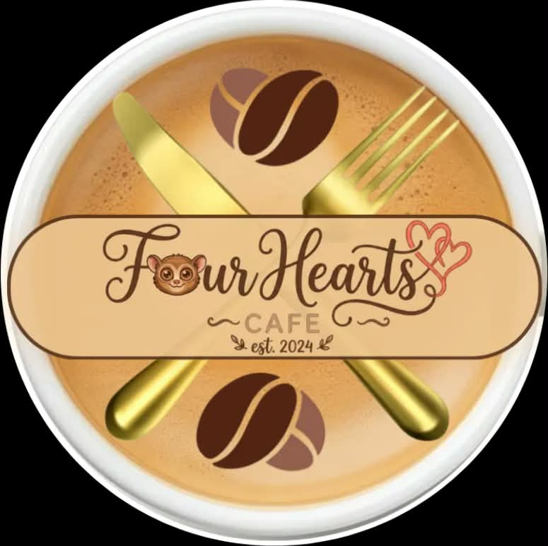

KRAZY FOURHEARTS
Learn about our purpose, subjects, and team
Learn • Create • CollaborateOUR PURPOSE
This website was created to showcase our school projects, activities, research, and learning materials in one organized and creative platform.
It allows us to present what we have learned from different subjects while developing our creativity, teamwork, research skills, and knowledge in web design.
Through this website, we aim to make our projects easier to explore while showing the effort and collaboration of our team.
OUR SUBJECTS
Music, Arts, Physical Education, and Health. This subject develops creativity, physical fitness, healthy habits, and appreciation for arts and culture.
Science helps us understand the natural world through observation, investigation, experiments, and critical thinking.
Araling Panlipunan helps us understand history, society, culture, geography, government, and the responsibilities of citizens.
Filipino develops our skills in language, literature, communication, reading, writing, and appreciation of Filipino culture.
Values Education encourages responsibility, respect, good decision-making, kindness, and positive character development.
OUR TEAM

Our team name represents the combination of Krazy Insan and Four Hearts.
Founded by four friends passionate about baking and community, 4 Hearts Cafe is a cozy spot blending modern comfort with traditional Filipino aesthetics. It offers a homey space to unwind while enjoying specialty Philippine coffee and creative treats like ube croissants and leche flan tarts.
Krazy Insan is a Filipino-Indian fusion restaurant founded by four good-looking boys driven by a shared passion for food and community. Housed in a cozy, traditional bahay-kubo style space furnished with nostalgic Pinoy games like tumbang preso, and myths books. The restaurant offers a warm and relaxing atmosphere for every customers. Its unique menu features blends local Filipino staples like authentic Chicken Inasal and sizzling Sisig with complex spice Indian classics such as aromatic Chicken Biryani and crispy Pani Puri.